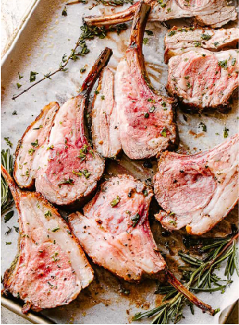
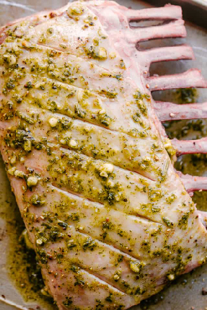
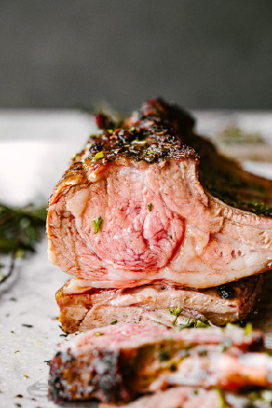
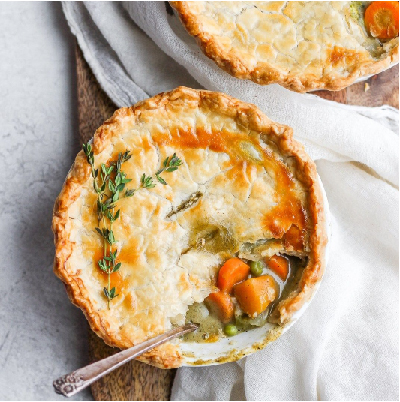
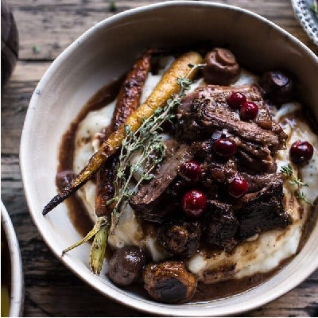
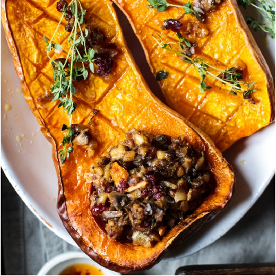

Easy Roasted Rack of Lamb
This easy Roasted Rack of Lamb recipe makes the most elegant family or holiday dinner. Easter dinner idea anyone? Use high quality ingredients like a top cut of lamb, fresh herbs, and rich extra virgin olive oil, for a simple but show stopping meal.
Ingredients
1. Prep: Pat lamb rack dry with paper towels. Season it with salt and pepper all around. Then, set it aside.
2. Mix: In a small food processor, combine the olive oil, parsley, garlic, rosemary, and thyme leaves and pulse until everything is thoroughly mixed.
3. Rub: Using a sharp knife, score the fat layer on the lamb by making several cuts through the fat. Rub the garlic-herb mixture all over the rack of lamb.
4. Marinate: Place the rack of lamb in a large Ziploc bag. Seal the bag and leave it at room temperature for 1 to 2 hours, max. You can also marinate it overnight in the refrigerator, just bring to room temperature before cooking.
5. Roast: Preheat oven to 450˚F. Take the lamb out of the bag and place it on a baking pan fat side up. Cover the exposed ribs with foil so they don’t burn while they’re roasting.
6. Rest and Serve: Remove the lamb from the oven. Loosely cover it with foil and let it rest for 15 minutes before cutting.
SERVING SUGGESTIONS
Lamb meat is super rich to begin with, so, when serving a rack of lamb, I like to keep my sides light. I really like a side of mushroom orzo pilaf or quinoa with this dish. And, green veggies also pair excellently with roasted rack of lamb. Think, sauteed green beans, roasted grilled asparagus, or broccolini.
MORE IDEAS FOR YOUR HOLIDAY CELEBRATION
  